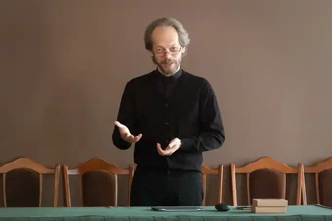

Народився 1 квітня 1968 року в Конотопі, Сумська область, Україна.
У 1985 році закінчив Конотопську середню школу № 1.
У 1986-1988 роках служив у прикордонних військах СРСР. У 1991 році отримав українське громадянство. У 1996 році з відзнакою закінчив філософський факультет Київського державного університету імені Тараса Шевченка. У 1993-1996 роках навчався у Курській духовній семінарії. У 1995 році був висвячений на диякона і пресвітера. З 1997 року є фундатором і шеф-редактором інтернет-порталу "Православіє в Україні". З 1999 року по 2001 рік був кліриком Херсонської єпархії УПЦ. З 2001 року по 2008 рік був кліриком Київської єпархії УПЦ. В 2008 році був призначений прес-секретарем Предстоятеля УПЦ. З 2008 року по 2016 рік був головою Синодального інформаційно-просвітницького відділу УПЦ. З 2014 року по 2016 рік був головою Синодального просвітницького відділу УПЦ. З 2016 року є ректором Відкритого Православного Університету Святої Софії-Премудрості. У 2016 році був нагороджений ювілейною медаллю "25 років незалежності України". У 2017 році виступив у ролі ведучого телевізійної програми "Таємний код віри" на телеканалі "1+1". Основні досягнення: Створення і розвиток інтернет-порталу "Православіє в Україні", який є одним із найпопулярніших православних ресурсів в Україні. Створення і розвиток телевізійних програм "Православний світ" (2003-2006), "Світ Православія" (2006-2013) і "Православний вісник" (2013-дотепер). Створення і розвиток телеканалу "Глас" (2004-2005). Створення і розвиток Відкритого Православного Університету Святої Софії-Премудрості. Георгій Коваленко є відомим українським православним священнослужителем, блогером і громадським діячем. Він є засновником інтернет-порталу "Православіє в Україні", одного з найпопулярніших православних ресурсів в Україні. Коваленко також є автором телевізійних програм "Православний світ", "Світ Православія" і "Православний вісник". У 2016 році він був призначений ректором Відкритого Православного Університету Святої Софії-Премудрості.